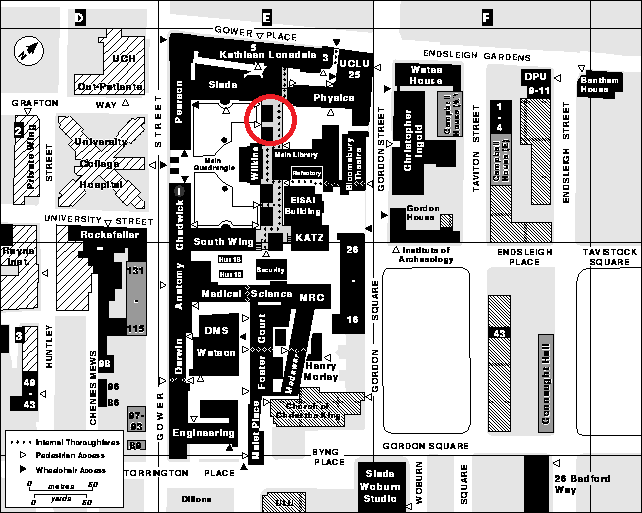

Find us!
We're not hard people to find. Here's where you might find us during term time.
Weekly Sessions
We meet in the North Cloisters of the Wilkins Building every Tuesday 7-9pm. Just come along, let yourself in and introduce yourself to someone. We're a friendly bunch. I have circled in red below the location of the North Cloisters using this incredibly out-of-date map of UCL from the 90s. If you want the exact address, we're at

Monthly Fire Night
You read it right - we juggle with fire as well. Here at JACS, we're proud to be part of a long tradition of fire jugglers and staff wielders dating back to the early 00s. This makes us one of the very few places in London where you can watch - even participate - in fire juggling and spinning.
You might be thinking - isn't that incredibly dangerous? And you would be correct. That is why we've written a 2,100-word additional risk assessment which requires at least one member of the committee to be first-aid trained. We're glad to say that, as of 2023, we have secured all the official paperwork from the Union and UCL Fire Safety to carry out the event in the Main Quad.
We meet on the Main Quad every last Friday of the month during term time (or last Friday before end of term - subject to weather and UCL venue bookings).
The National Juggling Varsity
The National Juggling Varsity is the annual juggling competition that used to be held between the Cambridge, Imperial, UCL, and Oxford juggling societies going as far back as the millennium.
The Varisty consists of various juggling related games, as well as endurance and numbers challenges. The winners score points for their team, and the university with the most points at the end of the day wins.
After a four-year (Covid) hiatus, the Varisty is stronger than ever before with new juggling societies joining the competition (and some old ones dying out), not just from the South East. In June 2023, we hosted the first Varisty since Covid
right here at UCL with Cambridge, Imperial (Chess Club), KCL, Lincoln, Southampton, and York! Check out our photo album for pictures from the 2022/23 Varsity.
Hire Us?
We work in partnership with a wide range of groups both within and outside of the UCL community.
We're always eager to put on a great show. We currently offer performances and circus skills workshops in London, subject to our members' avaliability.
We're also always looking for volunteering opportunities with schools, community organisations, and charities across London, as part of our Union's
Student-Led Volunteering Programme.
For all events enquiries, email us at su-jugglingandcircus.society@ucl.ac.uk.
Contact
You can contact us through the following social media channels
We have a WhatsApp group chat where we put out regular updates, but you'll have to send us a DM to get the invite link because I don't want to be spammed by essay helpout bots. Alternatively, we can also be reached via email at su-jugglingandcircus.society@ucl.ac.uk.Here is our mailing address is if you want to send us a gift. For security reasons, we do not accept mail bombs. Student Activities Reception, 2/F Bloomsbury Theatre, 15 Gordon Street, London WC1H 0AH.